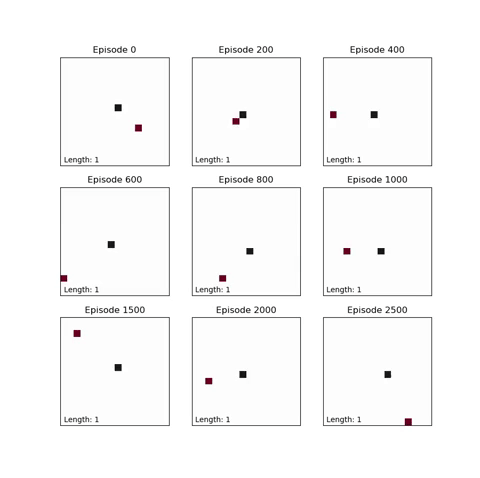

強化學習 <<
Previous Next >> 課程主題
Snake RL
https://github.com/mdecourse/Snake-Reinforcement-Learning
Applying basic reinforcement learning principles using the Snake game in Python
Snake.py is a basic snake game.
QLearning.py teaches an agent to play the snake game using Q-Learning. For every move, the game will send a reward. If the snake collides with itself or a wall, there is a negative reward. If the snake moves towards the food, there is a positive reward.
The Q matrix is initially filled with zeros. The size is (number of states, number of actions).
Every move that the agent makes, the Q table is updated as below:
Q[state, action] = reward + gamma * max(Q[new_state, :])
During the training phase, the agent will either choose the action with the max Q value at that state or the agent will randomly choose an action. The Q matrix is then updated using the equation above.
This process is repeated until the game is complete. Many games are played to update the Q matrix.
QLearning.py will automatically animate some samples games at various stages of the training process.
See below for example games using the Q matrix at various stages in the training process.

References:
https://towardsdatascience.com/snake-played-by-a-deep-reinforcement-learning-agent-53f2c4331d36
https://github.com/mdecourse/snake
https://www.learndatasci.com/tutorials/reinforcement-q-learning-scratch-python-openai-gym/
https://www.analyticsvidhya.com/blog/2021/04/q-learning-algorithm-with-step-by-step-implementation-using-python/
Snake.py
'''
Basic snake game for use by reinforcement learning.
Run this script to test it out in the console
'''
import numpy as np
import random
class BodyNode():
def __init__(self, parent, x, y):
self.parent = parent
self.x = x
self.y = y
def setX(self, x):
self.x = x
def setY(self, y):
self.y = y
def setParent(self, parent):
self.parent = parent
def getPosition(self):
return (self.x, self.y)
def getIndex(self):
return (self.y, self.x)
class Snake():
def __init__(self, x, y):
self.head = BodyNode(None, x, y)
self.tail = self.head
def moveBodyForwards(self):
currentNode = self.tail
while currentNode.parent != None:
parentPosition = currentNode.parent.getPosition()
currentNode.setX(parentPosition[0])
currentNode.setY(parentPosition[1])
currentNode = currentNode.parent
def move(self, direction):
(oldTailX, oldTailY) = self.tail.getPosition()
self.moveBodyForwards()
headPosition = self.head.getPosition()
if direction == 0:
# y 座標 - 1 表示往下移動 - down
self.head.setY(headPosition[1] - 1)
elif direction == 1:
# x 座標 + 1 表示往右移動 - right
self.head.setX(headPosition[0] + 1)
elif direction == 2:
# y 座標 + 1 表示往上移動 - up
self.head.setY(headPosition[1] + 1)
elif direction == 3:
# x 座標 - 1 表示往左移動 - left
self.head.setX(headPosition[0] - 1)
return (oldTailX, oldTailY, *self.head.getPosition())
def newHead(self, newX, newY):
newHead = BodyNode(None, newX, newY)
self.head.setParent(newHead)
self.head = newHead
def getHead(self):
return self.head
def getTail(self):
return self.tail
class SnakeGame():
def __init__(self, width, height):
# arbitrary numbers to signify head, body, and food)
# 0 for empty space
self.headVal = 2
self.bodyVal = 1
self.foodVal = 7
self.width = width
self.height = height
self.board = np.zeros([height, width], dtype=int)
self.length = 1
startX = width//2
startY = height//2
self.board[startX, startY] = self.headVal
self.snake = Snake(startX, startY)
self.spawnFood()
self.calcState()
# print(self.board)
def spawnFood(self):
# spawn food at location not occupied by snake
emptyCells = []
for index, value in np.ndenumerate(self.board):
if value != self.bodyVal and value != self.headVal:
emptyCells.append(index)
self.foodIndex = random.choice(emptyCells)
self.board[self.foodIndex] = self.foodVal
def checkValid(self, direction):
# check if move is blocked by wall
newX, newY = self.potentialPosition(direction)
if newX == -1 or newX == self.width:
return False
if newY == -1 or newY == self.height:
return False
# check if move is blocked by snake body
if self.board[newY, newX] == self.bodyVal:
return False
return True
def potentialPosition(self, direction):
(newX, newY) = self.snake.getHead().getPosition()
if direction == 0:
newY -= 1
elif direction == 1:
newX += 1
elif direction == 2:
newY += 1
elif direction == 3:
newX -= 1
return (newX, newY)
def calcState(self):
# state is as follows.
# Is direction blocked by wall or snake?
# Is food in this direction?
# (top blocked, right blocked, down blocked, left blocked,
# top food, right food, down food, left food)
self.state = np.zeros(8, dtype=int)
for i in range(4):
self.state[i] = not self.checkValid(i)
self.state[4:] = self.calcFoodDirection()
def calcStateNum(self):
# calculate an integer number for state
# there will be 2^8 potential states but not all states are reachable
stateNum = 0
for i in range(8):
stateNum += 2**i*self.state[i]
return stateNum
def calcFoodDirection(self):
# food can be 1 or 2 directions eg. right and up
# 0 is up, 1 is right, 2 is down, 3 is left
foodDirections = np.zeros(4, dtype=int)
dist = np.array(self.foodIndex) - np.array(self.snake.getHead().getIndex())
if dist[0] < 0:
# down
foodDirections[0] = 1
elif dist[0] > 0:
# up
foodDirections[2] = 1
if dist[1] > 0:
# right
foodDirections[1] = 1
elif dist[1] < 0:
# left
foodDirections[3] = 1
return foodDirections
def plottableBoard(self):
#returns board formatted for animations
board = np.zeros([self.width, self.height])
currentNode = self.snake.tail
count = 0
while True:
count += 1
board[currentNode.getIndex()] = 0.2 + 0.8*count/self.length
currentNode = currentNode.parent
if currentNode == None:
break
board[self.foodIndex] = -1
return board
def display(self):
for i in range(self.width+2):
print('-', end='')
for i in range(self.height):
print('\n|', end='')
for j in range(self.width):
if self.board[i, j] == 0:
print(' ', end='')
elif self.board[i, j] == self.headVal:
print('O', end='')
elif self.board[i, j] == self.bodyVal:
print('X', end='')
elif self.board[i, j] == self.foodVal:
print('*', end='')
print('|', end='')
print()
for i in range(self.width+2):
print('-', end='')
print()
# print(self.board)
def makeMove(self, direction):
gameOver = False
if self.checkValid(direction):
# set reward if moving in the right direction
if self.calcFoodDirection()[direction] == 1:
reward = 1
else:
reward = 0
(headX, headY) = self.snake.getHead().getPosition()
# set old head to body val
self.board[headY, headX] = self.bodyVal
# check if we got the fruit
potX, potY = self.potentialPosition(direction)
if self.board[potY, potX] == self.foodVal:
# extend the snake
self.snake.newHead(potX, potY)
self.board[potY, potX] = self.headVal
self.spawnFood()
self.length += 1
# if you want to give a higher reward for getting the fruit, uncomment below
reward = 2
else:
# move the snake
(oldTailX, oldTailY, newHeadX, newHeadY) = self.snake.move(direction)
self.board[oldTailY, oldTailX] = 0
self.board[newHeadY, newHeadX] = self.headVal
else:
reward = -2
gameOver = True
self.calcState()
return (self.calcStateNum(), reward, gameOver, self.length)
if __name__ == "__main__":
game = SnakeGame(8, 8)
game.display()
print("Score: 1")
while True:
direction = input("Input Direction (w,a,s,d or q to quit): ")
if direction == 'w':
new_state, reward, gameOver, score = game.makeMove(0)
elif direction == 'a':
new_state, reward, gameOver, score = game.makeMove(3)
elif direction == 's':
new_state, reward, gameOver, score = game.makeMove(2)
elif direction == 'd':
new_state, reward, gameOver, score = game.makeMove(1)
elif direction == 'q':
break
if gameOver:
print("Game Over, Score:", score)
break
else:
game.display()
print("Reward:", reward, "Score:", score)
QLearning.py
'''
Basic implementation of Q Learning without neural networks
Sometimes the machine will get stuck in an infinite loop of non-scoring moves. If so just rerun the script
'''
import random
from Snake import SnakeGame
import numpy as np
import matplotlib.pyplot as plt
import matplotlib.animation as animation
#%%
def evaluateScore(Q, boardDim, numRuns, displayGame=False):
# Run the game for a specified number of runs given a specific Q matrix
cutoff = 100 # X moves without increasing score will cut off this game run
scores = []
for i in range(numRuns):
game = SnakeGame(boardDim, boardDim)
state = game.calcStateNum()
score = 0
oldScore = 0
gameOver = False
moveCounter = 0
while not gameOver:
possibleQs = Q[state, :]
action = np.argmax(possibleQs)
state, reward, gameOver, score = game.makeMove(action)
if score == oldScore:
moveCounter += 1
else:
oldScore = score
moveCounter = 0
if moveCounter >= cutoff:
# stuck going back and forth
break
scores.append(score)
return np.average(scores), scores
# %%
boardDim = 16 # size of the baord
# state is as follows.
# Is direction blocked by wall or snake?
# Is food in this direction? can either be one or two directions eg (food is left) or (food is left and up)
# state = (top blocked, right blocked, down blocked, left blocked, up food, right food, down food, left food)
# 8 boolean values. Not all states are reachable (eg states with food directions that don't make sense)
numStates = 2**8
numActions = 4 # 4 directions that the snake can move
Q = np.zeros((numStates, numActions))
# lr = 0.9 #learning rate. not used in this Q learning equation
gamma = 0.8 # discount rate
epsilon = 0.2 # exploration rate in training games
numEpisodes = 10001 # number of games to train for
Qs = np.zeros([numEpisodes, numStates, numActions])
bestLength = 0
print("Training for", numEpisodes, "games...")
for episode in range(numEpisodes):
# print("New Game")
game = SnakeGame(boardDim, boardDim)
state = game.calcStateNum()
gameOver = False
score = 0
while not gameOver:
if random.uniform(0, 1) < epsilon:
action = random.randint(0, 3)
else:
possibleQs = Q[state, :]
action = np.argmax(possibleQs)
new_state, reward, gameOver, score = game.makeMove(action)
# http: // mnemstudio.org/path-finding-q-learning-tutorial.htm
Q[state, action] = reward + gamma * np.max(Q[new_state, :])
# https://towardsdatascience.com/simple-reinforcement-learning-q-learning-fcddc4b6fe56
# Q[state, action] = Q[state, action] + lr * (reward + gamma * np.max(Q[new_state, :]) - Q[state, action])
state = new_state
Qs[episode, :, :] = np.copy(Q)
if episode % 100 == 0:
averageLength, lengths = evaluateScore(Q, boardDim, 25)
if averageLength > bestLength:
bestLength = averageLength
bestQ = np.copy(Q)
print("Episode", episode, "Average snake length without exploration:", averageLength)
#%%
#Animate games at different episodes
print("Generating data for animation...")
#plotEpisodes = [0, 200, 300, 400, 500, 600, 700, 800, 900]
plotEpisodes = [0, 200, 400, 600, 800, 1000, 2500, 5000, 10000]
fig, axes = plt.subplots(3, 3, figsize=(9,9))
axList = []
ims = []
dataArrays = []
scores = []
labels = []
for i, row in enumerate(axes):
for j, ax in enumerate(row):
ax.set_title("Episode " + str(plotEpisodes[i*len(row) + j]))
ax.get_yaxis().set_visible(False)
ax.get_xaxis().set_visible(False)
axList.append(ax)
ims.append(ax.imshow(np.zeros([boardDim, boardDim]), vmin=-1, vmax=1, cmap='RdGy'))
labels.append(ax.text(0,15, "Length: 0", bbox={'facecolor':'w', 'alpha':0.75, 'pad':1, 'edgecolor':'white'}))
dataArrays.append(list())
scores.append(list())
stopAnimation = False
maxFrames = 1000
cutoff = 100
numGames = 10
for k in range(numGames):
games = []
states = []
gameOvers = []
moveCounters = []
oldScores = []
for l in range(len(plotEpisodes)):
game = SnakeGame(boardDim, boardDim)
games.append(game)
states.append(game.calcStateNum())
gameOvers.append(False)
moveCounters.append(0)
oldScores.append(0)
for j in range(maxFrames):
for i in range(len(plotEpisodes)):
possibleQs = Qs[plotEpisodes[i], :, :][states[i], :]
action = np.argmax(possibleQs)
states[i], reward, gameOver, score = games[i].makeMove(action)
if gameOver:
gameOvers[i] = True
dataArrays[i].append(games[i].plottableBoard())
scores[i].append(score)
if score == oldScores[i]:
moveCounters[i] += 1
else:
oldScores[i] = score
moveCounters[i] = 0
if moveCounters[i] >= cutoff:
# stuck going back and forth
gameOvers[i] = True
if not any(gameOver == False for gameOver in gameOvers):
print("Game", k, "finished, total moves:", len(dataArrays[0]))
break
def animate(frameNum):
for i, im in enumerate(ims):
labels[i].set_text("Length: " + str(scores[i][frameNum]))
ims[i].set_data(dataArrays[i][frameNum])
return ims+labels
print("Animating snakes at different episodes...")
numFrames = len(dataArrays[0])
ani = animation.FuncAnimation(fig, func=animate, frames=numFrames,blit=True, interval=75, repeat=False, )
plt.show(block=False)
#%%
##uncomment below if you want to output to a video file
#print("Saving to file")
#ani.save('AnimatedGames.mp4', fps=15, extra_args=['-vcodec', 'libx264'])
#print("Done")
makeQconversionGraphics.py
##Generates convergence graph after QLearning script has run
#%%
usedQs = []
for index, val in np.ndenumerate(Qs[0,:,:]):
qLine = Qs[:, index[0], index[1]][:5000]
if any([item != 0 for item in qLine]) and qLine[-1] != 0:
usedQs.append(np.copy(qLine))
usedQs = np.abs(usedQs)
y = []
finalVals = []
for i in range(len(usedQs)):
#y.append((fullQs[j][hasSomethingList[i][0],hasSomethingList[i][1]] - maxVals[i])/maxVals[i])
finalVal = np.mean(usedQs[i][-100:])
finalVals.append(finalVal)
y = (usedQs[i]-finalVal) / finalVal
plt.plot(y,color="black",alpha=0.025)
plt.ylim(-1,0.5)
plt.title("Convergence of Q Table")
plt.ylabel("Normalized Q Value")
plt.xlabel("Episode Number")
plt.savefig("ConvergenceGraph.png", dpi=300)
plt.show()
強化學習 <<
Previous Next >> 課程主題